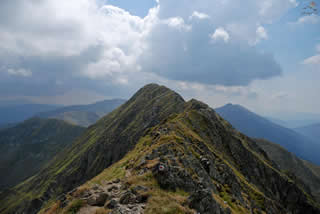

Carpatii Meridionali
Carpatii Meridionali sunt cei mai inalti si mai masivi din intregul lant al Carpatilor romanesti. Datorita trasaturilor reliefului, ei mai sunt numiti Alpii Transilvaniei si se intind de la Valea Prahovei, in est, pana la culoarul Timis-Cerna, in vest. Lungimea totala a acestora este de circa 300 km, iar latimea oscileaza intre 22/-5 km.

Recomandari turistice montane:
Zona Muntii Fagarasului: Şaua Podragului-Şaua Caprei, Vârful Moldoveanu-Brădet prin Zănoaga, Slatina-Portiţa Viştei, Şaua Scării-Şaua Suru,Cabana Bărcaciu-Lacul Avrig, Lacul Vidraru-Şaua Caprei, Arpaşu de Jos - Bâlea Cascadă, Bâlea Lac - Bâlea Cascadă prin V.Doamnei